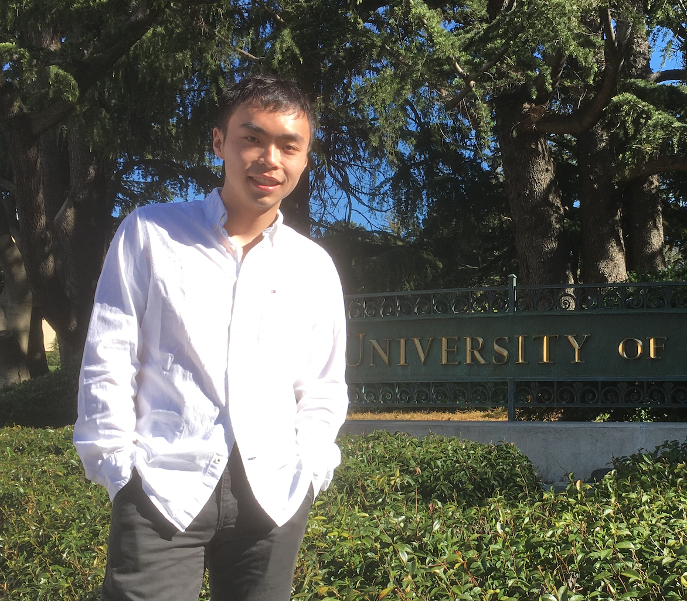

Lingfu Zhang's Home Page
|

|
Lingfu Zhang
(张灵夫)
Fine hall 410, Princeton, NJ 08544 USA
Email: lingfuz at math dot princeton dot edu
CV (Last update: Jul 20, 2021)
|
About me
I'm a PhD student at the Princeton University Mathematics Department, and my advisor is Professor Allan Sly. I will graduate in June 2022.
My research is in the area of probability, and within this area I have an interest in various problems, connected with statistical physics, computer science and combinatorics. A major theme of my research is the rigorous study of certain lattice models, with the general philosophy of combining exact formulas with geometric insights. Two particular topics I've studied are the Last Passage Percolation in the KPZ universality class, and the Anderson model of localization. In a different direction, I am interested in and have worked on several problems related to various Markov processes.
Education
Ph.D. in Mathematics, Princeton University (2017 - present).
B.S. in Mathematics and B.S. in Computer Science (Course 18 and 6-3), MIT (2014 - 2017).
Research
My papers can also be found on arXiv here. See also my Google Scholar page.
Accepted for publication
A phase transition for repeated averages
(with Sourav Chatterjee, Persi Diaconis, and Allan Sly)
Ann. Probab. accepted.
arXiv
Slides
short online talk
Abstract
Let \(x_1,\ldots,x_n\) be a fixed sequence of real numbers.
At each stage, pick two indices \(I\) and \(J\) uniformly at random and replace \(x_I\), \(x_J\) by \((x_I+x_J)/2\), \((x_I+x_J)/2\).
Clearly all the coordinates converge to \((x_1+\cdots+x_n)/n\).
We determine the rate of convergence, establishing a sharp cutoff transition answering a question of Jean Bourgain.
Anderson-Bernoulli localization on the 3D lattice and discrete unique continuation principle
(with Linjun Li)
Duke Math. J. accepted.
arXiv
Slides
short online talk
Abstract
We consider the Anderson model with Bernoulli potential on \(\mathbb{{Z}}^{3}\), and prove localization of eigenfunctions corresponding to eigenvalues near zero, the lower boundary of the spectrum.
Our main contribution is the 3D discrete unique continuation, which says that any eigenfunction of harmonic operator with potential cannot be too small on a significant fractional portion of \(\mathbb{{Z}}^{3}\).
Temporal correlation in last passage percolation with flat initial condition via Brownian comparison
(with Riddhipratim Basu and Shirshendu Ganguly)
Comm. Math. Phys. 383, 1805–1888 (2021).
arXiv
Journal
Slides
online talk
related talk by Riddhipratim Basu (first half)
Abstract
We consider directed last passage percolation on \(\mathbb{{Z}}^2\) with exponential passage times on the vertices. A topic of great interest is the coupling structure of the weights of geodesics between points as they are varied in space and time with various initial conditions with a particular case of importance being the flat initial data which corresponds to line-to-point last passage times. Settling a conjecture by Ferrari and Spohn (SIGMA 2016), we show that for the passage times from the line \(x+y=0\) to the points \((r,r)\) and \((n,n)\), denoted \(X_{r}\) and \(X_{n}\) respectively, as \(n\to \infty\) and \(\frac{r}{n}\) is small but bounded away from zero, the covariance satisfies \(\mbox{Cov}(X_{r},X_{n})=\Theta((\frac{r}{n})^{4/3+o(1)} n^{2/3})\), thereby establishing \(4/3\) as the temporal covariance exponent. This differs from the corresponding exponent for the droplet initial condition recently rigorously established in Ferrari and Occelli (2018), Basu and Ganguly (2018), and requires novel arguments. Key ingredients include the understanding of geodesic geometry and recent advances in quantitative comparison of geodesic weight profiles to Brownian motion using the Brownian Gibbs property. The proof methods are expected to be applicable for a wider class of initial data.
Optimal exponent for coalescence of finite geodesics in exponential last passage percolation
Electron. Commun. Probab. 25 (2020), paper no. 74, 14 pp.
arXiv
Journal
Abstract
In this note,
we study the model of directed last passage percolation on \(\mathbb{{Z}}^2\), with i.i.d. exponential weight.
We consider the maximum paths from vertices \(\left(0, \left\lfloor k^{2/3} \right\rfloor\right)\) and \(\left(\left\lfloor k^{2/3} \right\rfloor, 0\right)\) to \((n, n)\), respectively.
For the coalescing point of these paths,
we show that the probability for it being \(kR\) far away from the origin is in the order of \(R^{-2/3}\).
This is motivated by a recent work of Basu, Sarkar, and Sly, where the same estimate was obtained for semi-infinite geodesics, and the optimal exponent for the finite case was left open.
Interlacing adjacent levels of \(\beta\)-Jacobi corners processes
(with Vadim Gorin)
Probab. Theory Relat. Fields 172, 915–981 (2018).
arXiv
Journal
Slides
Abstract
We study the asymptotic of the global fluctuations for the difference between two adjacent level in the \(\beta\)-Jacobi corners process (multilevel and general \(\beta\) extension of the classical Jacobi ensemble of random matrices). The limit is identified with the derivative of the \(2d\) Gaussian Free Field. Our main tool is integral forms for the (Macdonald-type) difference operators originating from the Shuffle algebra.
Preprint
Fractal geometry of the space-time difference profile in the directed landscape via construction of geodesic local times
(with Shirshendu Ganguly), upcoming.
Convergence of the geodesic local time in Last Passage Percolation
(with Shirshendu Ganguly), upcoming.
Infinite order phase transition in the slow bond TASEP
(with Sourav Sarkar and Allan Sly), upcoming.
arXiv
talk by Allan Sly
Abstract
In the slow bond problem the rate of a single edge in the Totally Asymmetric Simple Exclusion Process (TASEP) is reduced from 1 to \(1-\varepsilon\). Janowsky and Lebowitz posed the question of whether such very small perturbations could affect the macroscopic current. Different groups of physicists, using a range of heuristics and numerical simulations reached opposing conclusions on whether the critical value of \(\varepsilon\) is 0. This was ultimately resolved rigorously by Basu-Sidoravicius-Sly which established that \(\varepsilon_c=0\).
Here we study the effect of the current as \(\varepsilon\) tends to 0 and in doing so explain why it was so challenging to predict on the basis of numerical simulations. In particularly we show that the current has an infinite order phase transition at 0, with the effect of the perturbation tending to 0 faster than any polynomial. Our proof focuses on the Last Passage Percolation formulation of TASEP where a slow bond corresponds to reinforcing the diagonal. We give a multiscale analysis to show that when \(\varepsilon\) is small the effect of reinforcement remains small compared to the difference between optimal and near optimal geodesics. Since geodesics can be perturbed on many different scales, we inductively bound the tails of the effect of reinforcement by controlling the number of near optimal geodesics and giving new tail estimates for the local time of (near) geodesics along the diagonal.
Shift-Invariance of the Colored TASEP and Finishing Times of the Oriented Swap Process
2021.
arXiv
Abstract
We prove a new shift-invariance property of the colored TASEP. It is in the same spirit as recent results of Borodin-Gorin-Wheeler, Dauvergne, and Galashin, while out of the scope of the generality of their methods. Our proof takes shift-invariance of the colored six-vertex model as an input, and uses analyticity of the probability functions and induction arguments. We apply our shift-invariance to prove a distributional identity between the finishing times of the oriented swap process and the point-to-line passage times in exponential last-passage percolation, which is conjectured by Bisi-Cunden-Gibbons-Romik and Bufetov-Gorin-Romik, and is also equivalent to a purely combinatorial identity in relation with the Edelman-Greene correspondence. With known results from last-passage percolation, this also implies new asymptotic results on the finishing times of the oriented swap process.
Convergence of the environment seen from geodesics in exponential last passage percolation
(with James B. Martin and Allan Sly), 2021. In submission.
arXiv
Slides
talk by James Martin
Abstract
A well-known question in the planar first-passage percolation model concerns the convergence of the empirical distribution along geodesics.
We demonstrate this convergence for an explicit model, directed last-passage percolation on \(\mathbb{Z}^2\) with i.i.d. exponential weights, and provide explicit formulae for the limiting distributions, which depend on the asymptotic direction.
For example, for geodesics in the direction of the diagonal, the limiting weight distribution has density \((1/4+x/2+x^2/8)e^{-x}\), and so is a mixture of Gamma(1,1), Gamma(2,1) and Gamma(3,1) distributions with weights 1/4, 1/2, and 1/4 respectively.
More generally, we study the local environment as seen from vertices along the geodesics
(including information about the shape of the path and about the weights on and off the path
in a local neighborhood).
We consider finite geodesics from (0,0) to \(n\boldsymbol{\rho}\) for some vector \(\boldsymbol{\rho}\) in the first quadrant, in the limit as \(n\to\infty\), as well as the semi-infinite geodesic in direction \(\boldsymbol{\rho}\).
We show almost sure convergence of the empirical
distributions along the geodesic, as well as convergence of the distribution around a typical point, and we give an explicit description of the limiting distribution.
We make extensive use of a correspondence
with TASEP as seen from a single second-class
particle for which we prove new results concerning
ergodicity and convergence to equilibrium.
Our analysis relies on geometric arguments involving estimates for the last-passage time, available from the integrable probability literature.
Mean Field Behavior during the Big Bang for Coalescing Random Walk
(with Jonathan Hermon, Shuangping Li, and Dong Yao), 2021. In submission.
arXiv
Abstract
In this paper we consider the coalescing random walk model on general graphs \(G=(V,E)\).
We set up a unified framework to study the leading order of decay rate of \(P_t\), the expectation of the fraction of occupied sites at time $t$, particularly for the `Big Bang' regime where \(t \ll t_{coal}:=\mathbb{E}[\inf\{s:\text{There is only one particle at time }s \}]\).
Our results show that \(P_t\) satisfies certain `mean field behavior', if the graphs satisfy certain `transience-like' conditions.
We apply this framework to two families of graphs: (1) graphs given by configuration model with degree \(\ge 3\), and (2) finite and infinite vertex-transitive graphs.
In the first case, we show that for \(1 \ll t \ll |V|\), \(P_t\) decays in the order of \(t^{-1}\), and \((tP_t)^{-1}\) is approximately the probability that two particles starting from the root of the corresponding unimodular Galton-Watson tree never collide after one of them leaves the root, which is also roughly \(|V|/(2t_{meet})\), where \(t_{meet}\) is the mean meeting time of two independent walkers.
By taking the local weak limit, for the corresponding unimodular Galton-Watson tree we prove convergence of \(tP_t\) as \(t\to\infty\).
For the second family of graphs, if we take a growing sequence of finite vertex-transitive graphs \(G_n=(V_n, E_n)\), such that \(t_{meet}=O(|V_n|)\), and the inverse of the spectral gap \(t_{rel}\) is \(o(|V_n|)\), we show for
\(t_{rel} \ll t \ll t_{coal}\), \((tP_t)^{-1}\) is approximately the probability that two random walks never meet before time \(t\), and also \(|V|/(2t_{meet})\).
In addition, we define a certain natural `uniform transience' condition, and show that in the transitive setup it implies the above for all \(1 \ll t\ll t_{coal}\).
Such estimates of \(tP_t\) are also obtained for all infinite transient transitive unimodular graphs, in particular, all transient transitive amenable graphs.
Disjoint optimizers and the directed landscape
(with Duncan Dauvergne), 2021. In submission.
arXiv
related talk by Duncan Dauvergne (second half)
Abstract
We study maximal length collections of disjoint paths, or `disjoint optimizers', in the directed landscape. We show that disjoint optimizers always exist, and that their lengths can be used to construct an extended directed landscape. The extended directed landscape can be built from an independent collection of extended Airy sheets, which we define via last passage percolation across the Airy line ensemble. We show that the extended directed landscape and disjoint optimizers are scaling limits of the corresponding objects in Brownian last passage percolation. As two consequences of this work, we show that one direction of the Robinson-Schensted-Knuth bijection passes to the KPZ limit, and we find a criterion for geodesic disjointness in the directed landscape that uses only a single Airy line ensemble.
The Ising model on trees and factor of IID
(with Danny Nam and Allan Sly), 2020. In submission.
arXiv
Slides
online talk (with Allan Sly)
Abstract
We study the ferromagnetic Ising model on the infinite \(d\)-regular tree under the free boundary condition. This model is known to be a factor of IID in the uniqueness regime, when the inverse temperature \(\beta\ge 0\) satisfies \(\tanh \beta \le (d-1)^{-1} \). However, in the reconstruction regime (\(\tanh \beta > (d-1)^{-\frac{1}{2}}\) ), it is not a factor of IID. We construct a factor of IID for the Ising model beyond the uniqueness regime via a strong solution to an infinite dimensional stochastic differential equation which partially answers a question of Lyons. The solution \(\{X_t(v) \}\) of the SDE is distributed as \(X_t(v) = t\tau_v + B_t(v)\), where \(\{\tau_v \}\) is an Ising sample and \(\{B_t(v) \}\) are independent Brownian motions indexed by the vertices in the tree. Our construction holds whenever \(\tanh \beta \le c(d-1)^{-\frac{1}{2}}\), where \(c>0\) is an absolute constant.
Stationary distributions for the Voter Model in \(d\geq 3\) are factors of IID
(with Allan Sly), 2019. In submission.
arXiv
Slides
Abstract
For the Voter Model on \(\mathbb{{Z}}^d\), \(d\geq 3\),
we show that the (extremal) stationary distributions are Bernoulli shifts, and answer an open question asked by Steif and Tykesson.
The proof is by explicit constructing the stationary distributions as factors of IID processes on \(\mathbb{{Z}}^d\).
Refinements of the 2-dimensional Strichartz estimate on the maximum wavepacket
(with Hong Wang), 2016.
arXiv
Abstract
The Strichartz estimates for Schrödinger equations can be improved when the data is spread out in either physical or frequency space. In this paper we give refinements of the 2-dimensional homogeneous Strichartz estimate on the maximum size of a single wave packet. Different approaches are used in the proofs, including arithmetic approaches, polynomial partitioning, and the \(l^2\) Decoupling Theorem, for different cases. We also give examples to show that the refinements we obtain cannot be further improved when \(2 \leq p \leq 4\) and \(p = 6\).
Honors and Awards
2017 Centennial Fellowship, Princeton University.
2016 The Hartley Rogers Jr. Prize, MIT.
2015 Putnam Fellow, the 75th William Lowell Putnam Math Competition.
2013 Gold Medal, the 54th International Mathematical Olympiad (IMO).
Talks
MIT Probability Seminar, Nov 22, 2021.
[Online] University of Utah Stochastics Seminar, Nov 19, 2021.
[Online] KTH Random Matrix Seminar, Nov 16, 2021.
UW Madison Probability Seminar, Nov 11, 2021.
[Online] Columbia/NYU Courant Probability and the City Seminar, Oct 29, 2021.
[Online] Columbia-Princeton Probability Day, May 7, 2021.
[Online] UC San Diego Group Actions Seminar, May 4, 2021.
[Online] UC Berkeley Probability Seminar, Apr 21, 2021.
[Online] ETH/Geneva/Cambridge Percolation Today Webinar, Feb 16, 2021.
[Online] Junior Integrable Probability Seminar, Dec 17, 2020.
[Online] 19th Northeast Probability Seminar, Nov 20, 2020 (Contributed).
[Online] Integrable probability mini-workshop at Online Open Probability School, Jun 12, 2020.
[Online] University of Kansas Probability and Statistics Seminar, Apr 29, 2020.
Stanford University (Stanford, CA) Applied Math Seminar, Dec 4, 2019.
Duke University (Durham, NC) Probability Seminar, Oct 24, 2019.
ICTS, Tata Institute of Fundamental Research (Bangalore, India): Universality in random structures: Interfaces, Matrices, Sandpiles, Jan 25, 2019.
MIT (Cambridge, MA) Integrable Probability Working Group, Nov 29, 2016.
MIT (Cambridge, MA) Summer Program for Undergraduate Research Conference, Aug 5, 2016 (Contributed).
Teaching and Grading
MAT 215 Single Variable Analysis with an Introduction to Proofs, Fall 2021, Assistant Instructor.
MAT 385 Probability Theory, Spring 2021, Assistant Instructor.
MAT 104 Calculus II, Fall 2020, Preceptor.
MAT 385 Probability Theory, Spring 2020, Assistant Instructor.
MAT 216 Accelerated Honors Analysis I, Fall 2019, Assistant Instructor.
MAT 375 Introduction to Graph Theory, Spring 2019, Assistant Instructor.
MAT 204 Advanced Linear Algebra with Applications, Fall 2018, Assistant Instructor.
Last updated on Sep 12, 2021